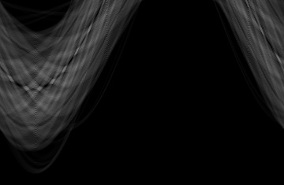
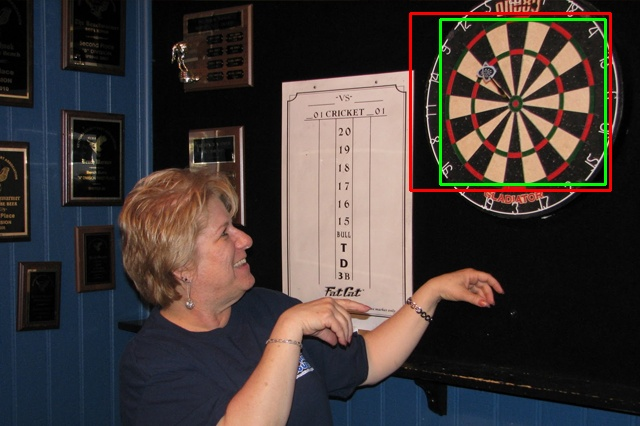

This project is focused on creating an algorithm that can correctly identify dart boards on images. The
start of the algorithm is a Viola-Jones detector that is given many positive and negative images in
order to train the classifier and then it is paired
with both a line and circle detector in hough space so as to correctly identify the lines of a dart
board. The language used here is C++.
Viola-Jones Object Detection
Using 500 samples of positive images (ie. images of dart boards) taken at different angles,
and another 500 images showing what is not a dart board, the Viola-Jones classifier was trained to try
and detect dart boards correctly. There are 15 dart
images in which the algorithm is tested on, the red squares are predefined areas which we consider
ground truth and the green squares are the algorithms results. The results as shown in Figures
1, 2, 3 and 4 reveal that the
classifier is not strong enough and although for example in all four images the classifier finds the
dartboards (true positive rate 100%), it also finds many false positives which is not ideal. Depending
on the use of the classifier sometimes
the ideal is this but we are aiming for accuracy here therefore the results are not good yet.
Figure 1
Figure 2
Figure 3
Figure 4
Hough Space Detectors
Hough Space Line Detector: To extend the Viola-Jones detector and improve our results,
we implemented a Hough Space Line Detector. Instead of taking into consideration the whole image for our
Hough Space, we used the resulting
detected boxes from the Viola-Jones to find the threshold magnitude image of each box Figures 5
and 8. Then we implemented the Hough Transform for Line detection in each of the boxes
Figures 6 and 9. We set
the threshold to 70 so that only the lines with the higher votes are considered, and then we set as a
condition that there are at least 10 lines in each of the detected boxes. The boxes that fulfilled the
conditions above were classified as
valid detections, and were kept in the image
Figure 7.
Figure 5: Magnitude image of the detected square containing the
dartboard in image dart0.jpg.

Figure 6: Hough Space for line detection of the detected square
containing the dartboard in image dart0.jpg.

Figure 7: Improved detection with the implementation of the Hough
Line Detector on image dart0.jpg.
Figure 8: Magnitude image of the detected square containing the
dartboard in image dart2.jpg.
Figure 9: Hough Space for line detection of the detected square
containing the dartboard in image dart2.jpg.
Figure 10: Detection of dartboard failed with Hough Line Detector
in image dart2.jpg.
Merits and Limitations: There is a noticeable increase in the average F1-score of the
table below, compared to the average F1-score of the Viola-Jones detection alone. However, although in
most images our improved detector
managed to have a very high accuracy by achieving high TPR and very low FPR, such as the one shown in
Figure 13, in some images it sabotaged the results by discarding previously correctly detected
dartboards. An example of the latter is shown
in Figure 16. There is a noticeable increase in the accuracy of the algorithm since it manages to
decrease the false positives of the image as it considers stricter rules for classifying a section of
the image as a dart board. The limitation
of the classifier is that it does not consider other sections of the image, only those detected by
Viola-Jones and sometimes this will not even help the classifier identify the dart board at all, such a
result is shown in Figure 10.
Rationale: The idea behind this way of implementing the combination of the two
algorithms in conjunction, is that if you "relax" the Viola-Jones classifier enough, there is a point
were you can achieve 100% true positive rate.
If at that point then having stricter rules on top of Viola-Jones would help decrease the enormous false
positive rate and become accurate enough with extremely good efficiency since the Hough Space Line
detector would not operate on the whole
image.
Hough Transform Circle Detector: In addition to the line detector added on top of the
Viola-Jones detector, Hough Transform Circle Detection can allow for a more accurate and better
detector. As mentioned previously by "relaxing"
a detection algorithm we can achieve higher true positive rate but also false positive rate as well.
Therefore we lowered the threshold of the line detector and added the Circle detector creating a complex
network of algorithms working in
conjunction to produce a more accurate result. As an example the results for the image in Figure
10 were drastically improved as shown by Figure 11 and also Figure
12.